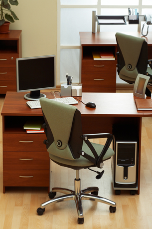
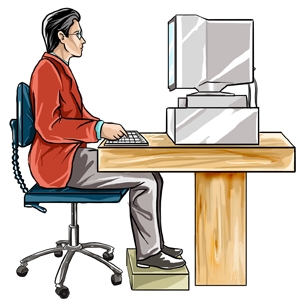
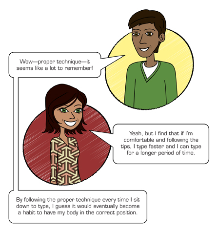

Project 1: Learning the Alphanumeric and Symbol Keys
Workstation Setup—Ergonomics
Computer Setup

© terekhov igor/shutterstock
Your workstation tools include your computer system (central processing unit, computer monitor, keyboard, mouse, and printer), as well as any software that you may need. Put away any items you are not using. Make sure you have space on your desk for your mouse and for the text from which you might be typing.
Arrange your computer hardware so that you have easy access to all components. Set your monitor so that the screen is directly in front of you, about 60 cm away. Set your keyboard so that you can sit directly in front of it.
Seating Arrangement
Arrange your furniture so you can easily move about your workspace and have easy access to all components.
Your chair must be located directly in front of the keyboard, with space for you to move your chair easily. Arrange the position of your chair and/or monitor so that the screen is directly in front of you. Remember, the monitor screen should be about 60 cm away from you.
Lighting
Proper lighting is essential. If the lighting in your workspace is too dark or too bright, your eyes will fatigue easily. Not only will your efficiency and productivity suffer under poor lighting conditions, your health may also be affected. Make certain that there is no glare on your computer screen from intense, overhead lighting or sunlight coming through windows.
There is much more you could learn about proper workspace design, suitable chairs and lighting, and proper body position and movements. If you are interested in learning more about these topics, use the search term ergonomics to find appropriate websites that will provide you with more information.
ergonomics: the applied science of equipment design, as for the workplace, intended to maximize productivity by reducing operator fatigue and discomfort

© hkannn/shutterstock
Health Concerns and Remedies
Keyboarding can cause stress on your eyes and other parts of your body when the proper precautions have been ignored. Your workstation, computer, and seating must be set up properly. The proper positioning of your body, wrists, and hands in relation to your keyboard is also vital.
© Yuri Arcurs/shutterstock
Chair, Posture, and Hand/Arm Position
Being comfortable is of utmost importance to accuracy and speed in keyboarding. One way to maintain comfort is to use correct typing posture.
Use a chair that fits the natural contours of your body and allows your feet to touch the floor. Your feet should be flat on the floor with one foot slightly in front of the other.
If the chair has armrests, make sure they are not so high that they raise your shoulders, as this will cause muscle tension in your shoulders, neck, and back.
Sit with your buttocks against the back of your chair and tilt your body slightly forward, keeping your back straight. Let your arms hang loosely at your sides with your elbows close to your body.
Your chair should be located so that your body is one hand-span away from the edge of your keyboard. To measure hand-span, place your hand in front of you with fingers outstretched and the part of your hand at the wrist joint against your body. The tip of your middle finger should touch the base of the keyboard. Ensure that your keyboard is placed flush with the edge of the desk.
Eyestrain and Headaches
Eyestrain and headaches will result from glare or if your monitor is too bright. The screen should not be placed in front of an outside window or in direct sunlight. Overhead lights should shine at a 50- to 90-degree angle to the screen. If the artificial lighting is too bright, adjust it by using lower-wattage light bulbs or fluorescent tubes, or by removing one or more light bulbs from a multiple-bulb light fixture. The intensity of some lights can be adjusted with a dimmer switch.
Keep your screen about 60 cm away from your eyes to ease eyestrain. Your eyes should be given a rest approximately every five minutes by looking away from the screen.
© Supri Suharjoto/shutterstock
Hand, Wrist, and Finger Positioning
Your wrists and hands should form a straight line when keyboarding. Your fingers should be in a natural downward cupped position so that the tips, not the palms, of your fingers strike the keys. Don’t allow your hands to rest on the keyboard or the desk.
Keyboarding with bent wrists will eventually cause pain in the lower arm. You may have to tilt your keyboard or alter the height of your chair to compensate for a desk that is too high.

Exercises to Relieve Muscle Aches
You may find that your back or your arms and wrists get sore after typing for a period of time. If this happens, get up and stretch or exercise your back and shoulders. It’s advisable to take frequent, short breaks.
If your wrists or forearms get sore, you are likely holding your hands too high. Check the angle of your hands as you’re keyboarding. The top of your forearm and the top of your hand should be in alignment. In other words, your wrists should not be bent. If they are bent, your desk is probably too high.
Make sure your hands and wrists are parallel to the keyboard. Your hands should never hang on the keyboard; they should be held just slightly above the base of the keyboard.
Sore wrists can be helped by shaking your hands and flexing them to loosen the muscles. Squeezing your hand tightly and then releasing it helps to release the tension.